TSD6 - Le télésiège des Grains d'Or Express
Les Gets et le secteur des Chavannes
Située en Haute-Savoie au cœur du domaine des Portes du Soleil, la station des Gets conserve l’identité d’un village de montagne tout en proposant un domaine skiable moderne adapté à tous les niveaux. Reliée aux autres stations françaises et suisses des Portes du Soleil, elle bénéficie d’un vaste terrain de ski évoluant entre le Léman et le Mont-Blanc.
Le télésiège débrayable des Grains d'Or Express se situe sur le versant des Chavannes, l’un des secteurs majeurs du domaine skiable des Gets. Ce secteur regroupe plusieurs remontées structurantes permettant d’assurer les liaisons entre les pistes d’altitude, le secteur de la Turche et les différents fronts de neige.
Mis en service dans le cadre de la modernisation des axes principaux du domaine, le Grains d'Or Express participe aujourd’hui à l’organisation des déplacements des skieurs sur le secteur Ranfoilly-Rosta et constitue un élément essentiel de la circulation sur ce versant.
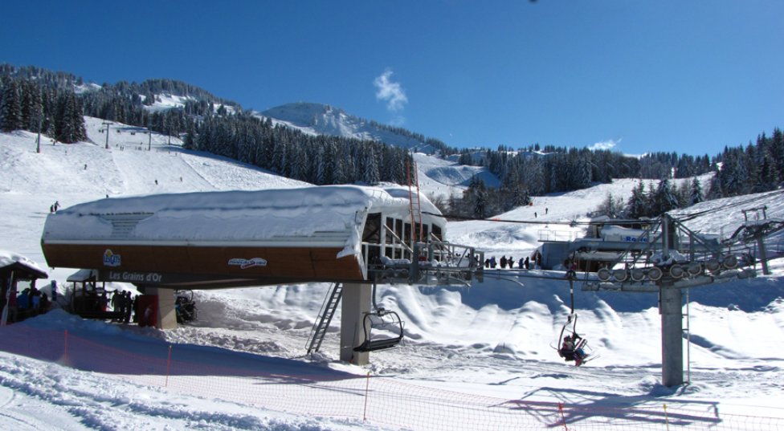
Histoire du Grains d'Or Express
Le secteur des Grains d'Or apparaît en 1963 avec la construction du téléski Grains d'Or, également appelé Turche Noir. Cette remontée permet alors de relier le secteur de la Turche aux pistes d'altitude des Chavannes. Avec le développement progressif du domaine skiable des Gets et l'augmentation de la fréquentation, ce téléski devient insuffisant pour assurer une liaison efficace entre les différents secteurs. Dans le cadre de la modernisation des axes structurants du domaine skiable, il est remplacé en 2003 par un télésiège débrayable 6 places : le Grains d'Or Express. Cette nouvelle remontée permet d'améliorer considérablement la circulation des skieurs sur le secteur des Chavannes et accompagne l'évolution du domaine avec notamment le développement du secteur des Perrières.
Rôle dans le domaine skiable
Le Grains d'Or Express occupe aujourd'hui une place importante dans l'organisation du secteur des Chavannes. Il assure une liaison rapide entre les pistes d'altitude et le secteur de la Turche, tout en participant à la répartition des skieurs entre les différentes zones du domaine. La remontée est intégrée à un important point de correspondance avec plusieurs appareils majeurs, notamment Nauchets Express, Ranfoilly Express, ainsi que les télésièges fixes Rosta et Mouille aux Chats. Elle permet également de rejoindre le front de neige des Perrières et facilite les déplacements vers les différents secteurs des Gets.
Pistes accessibles
Depuis la gare amont du Grains d'Or Express, les skieurs peuvent accéder à plusieurs pistes du domaine. La piste bleue Renardière permet de redescendre directement vers la gare aval de la remontée, tandis que la piste bleue Vorosses offre une liaison vers le secteur Perrières / Turche. Les skieurs confirmés peuvent également profiter de la piste noire Myrtilles, située sous la ligne du télésiège et offrant un tracé plus technique avec une pente soutenue.
Localisation géographique
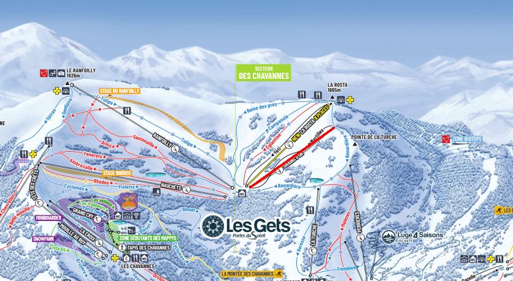
Infrastructures et ligne du télésiège débrayable
Mis en service en 2002 dans le cadre de la première étape de la réorganisation du secteur des Chavannes, le Grains d'Or Express a été construit par le constructeur français Pomagalski. Il appartient à la gamme Phoenix, équipée de gares de type Satellit. Cette conception modulaire permet de faciliter les opérations de maintenance tout en garantissant une meilleure fiabilité et un confort accru pour les usagers.
Le télésiège est équipé d'une gare aval assurant le retour et la tension du câble ainsi que d'une gare amont motrice. La ligne est exploitée à une vitesse maximale de 5 m/s, permettant un débit de 3 000 personnes par heure. Les sièges six places Doudouk6, associés aux pinces Omega T, disposent d'assises et de dossiers rembourrés afin d'offrir un meilleur confort tout au long du trajet.
La gare aval
La gare aval est implantée au pied des versants Ranfoilly-Rosta, à proximité immédiate de plusieurs remontées mécaniques majeures du secteur, notamment les télésièges des Nauchets, Ranfoilly, Rosta et Mouille au Chat. Cette position en fait un important point de correspondance du domaine skiable.
Son bâtiment adopte une architecture mêlant bois et tôle blanche, avec les logos des Gets et des Portes du Soleil visibles sur la façade. L'embarquement est de type tangentiel, directement intégré au contour de la gare. À l'arrière, un court rail de service équipé d'une plateforme de maintenance permet notamment le stationnement de la nacelle de service.
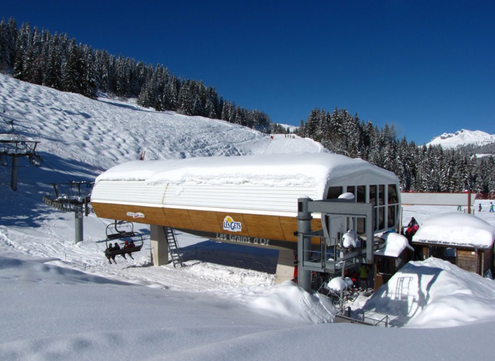
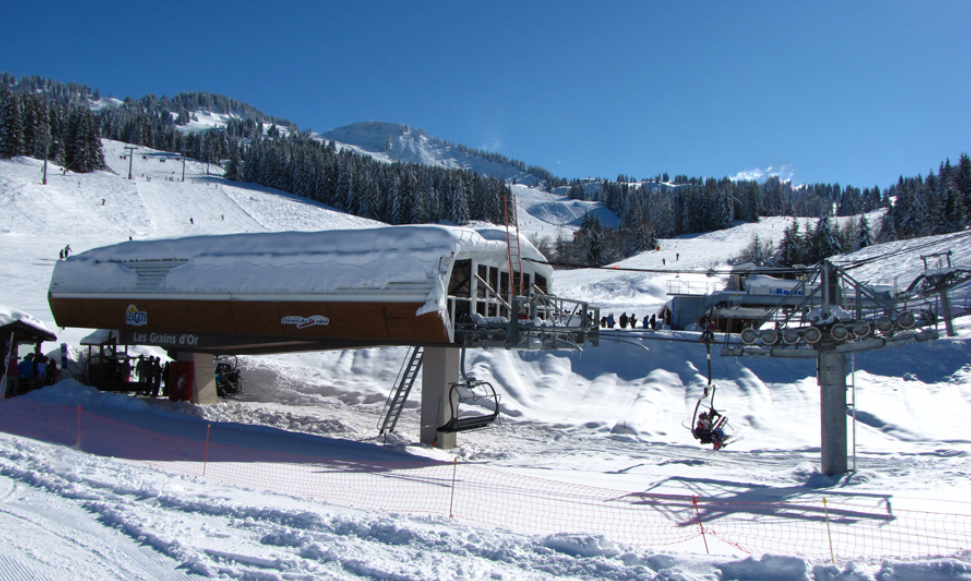
Ligne
Ce télésiège débrayable 6 places développe une longueur de 675 mètres pour un dénivelé de 241 mètres. Relativement courte pour un appareil débrayable, la ligne compte 8 pylônes, à raison de deux pylônes compression et de six pylônes support. Ce téléporté présente une ligne avec une pente soutenue (pente moyenne de 42 %) marquée par plusieurs portées conséquentes, notamment celle située entre les pylônes 5 et 6. À plusieurs reprises, la ligne survole la piste noire Myrtilles.
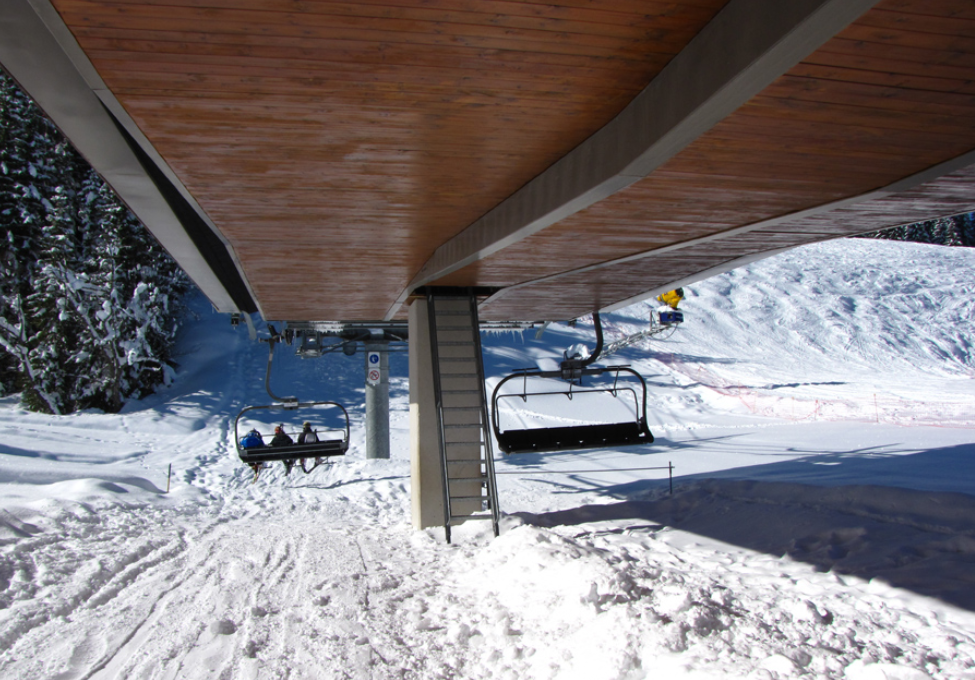
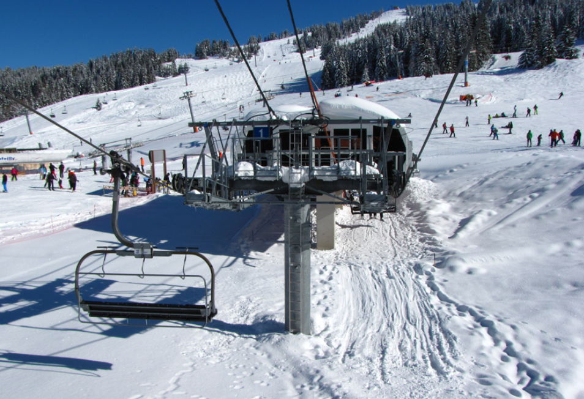
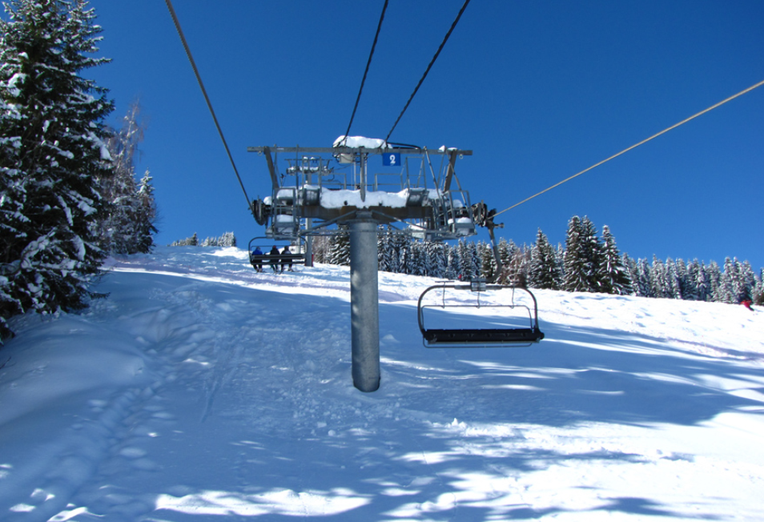
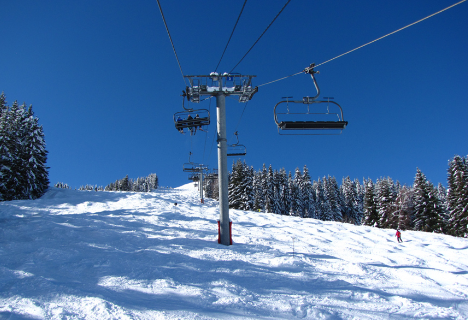
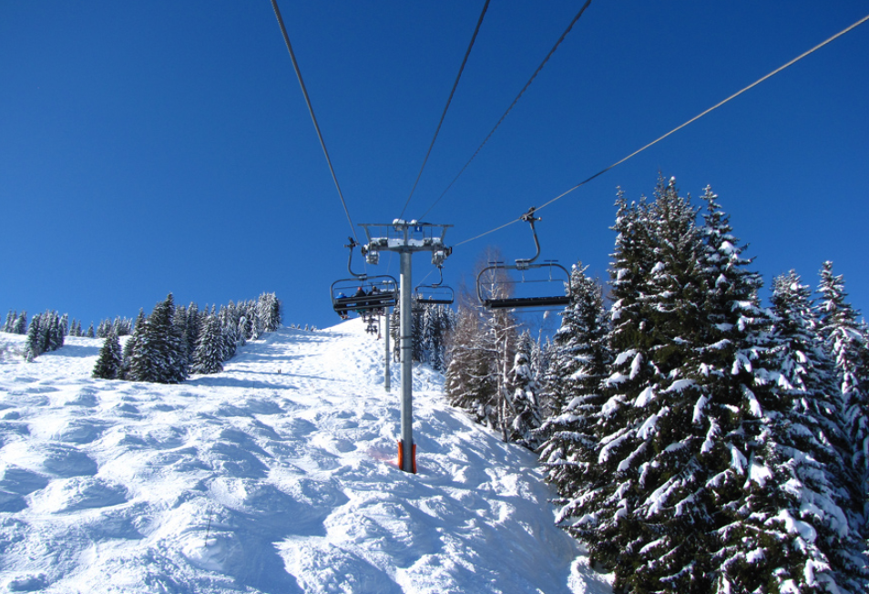
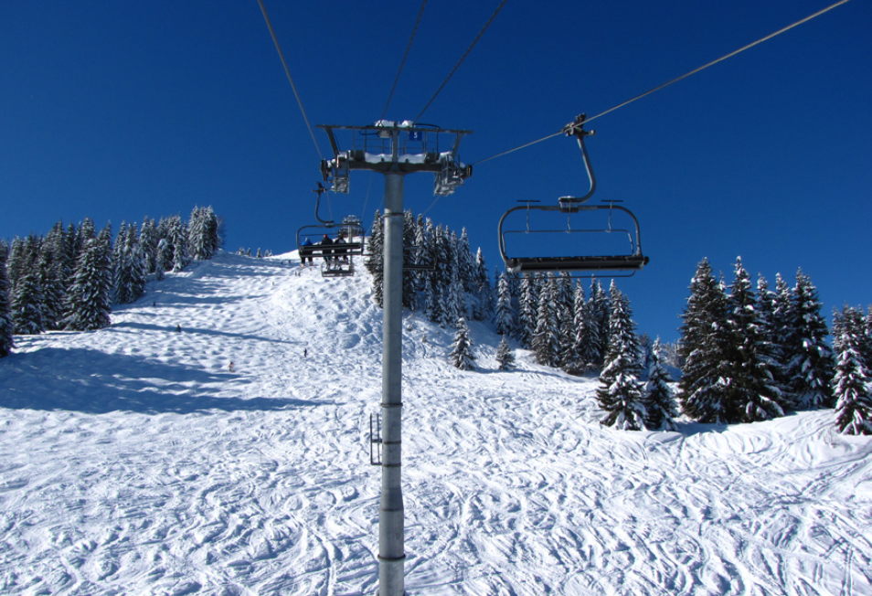
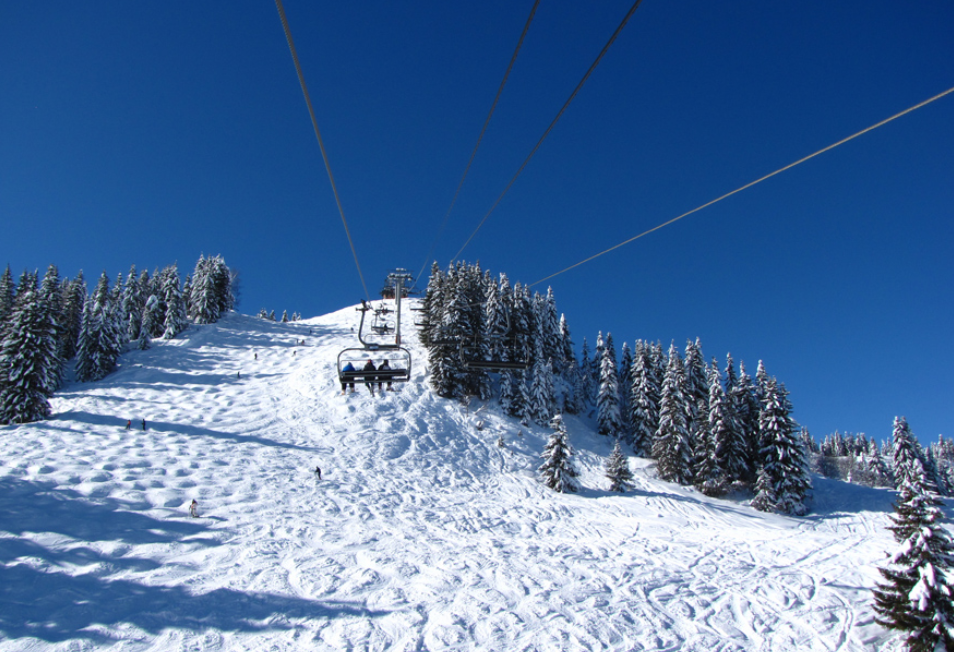
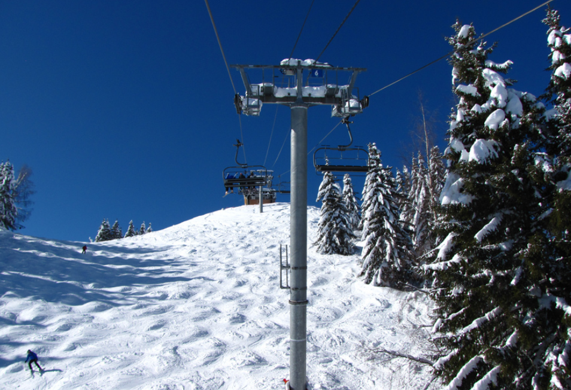
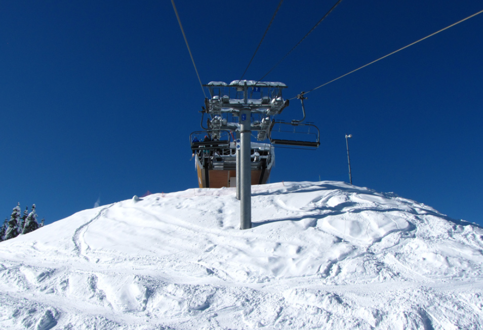
La gare amont
La gare amont est située au lieu-dit « La Turche Noire » à une altitude de 1633 mètres. Elle est équipée, comme la gare aval, d’une couverture intégrale mi-bois, mi-tôle. Le schéma des couleurs est identique, ainsi que la présence des logos des Gets et des Portes du Soleil. La zone de débarquement est assurée dans le sens de la ligne. Un très court rail de service est installé dans le prolongement du brin montant.
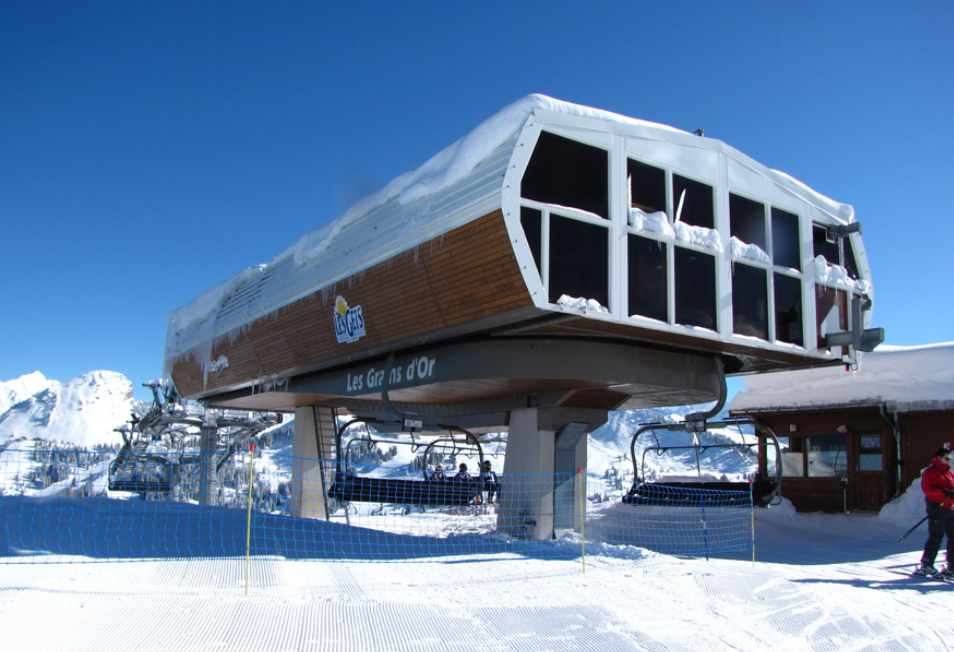
Photos diverses
Cette section regroupe différentes photographies du télésiège des Grains d'Or Express, notamment des détails des sièges, des éléments de la ligne ainsi que plusieurs vues permettant d'observer les différentes infrastructures de la remontée mécanique.
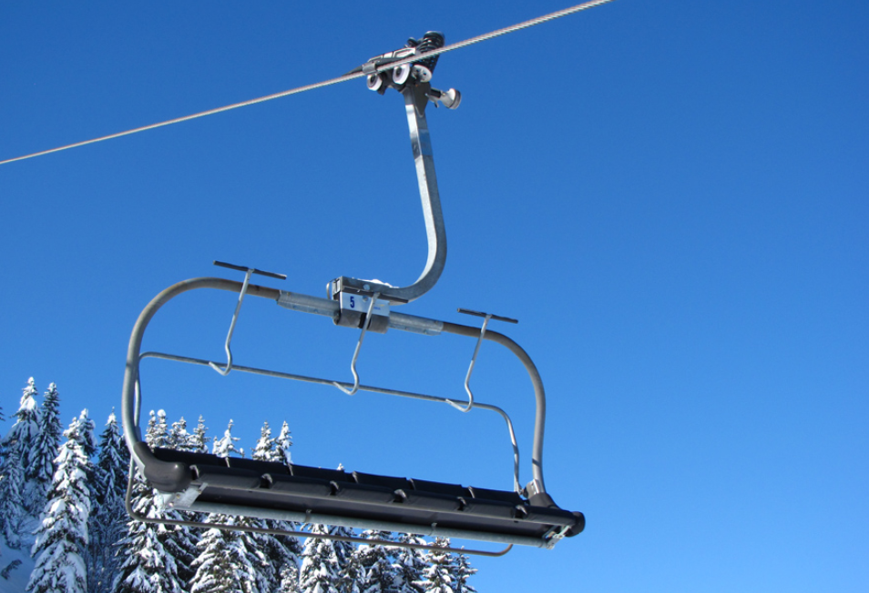
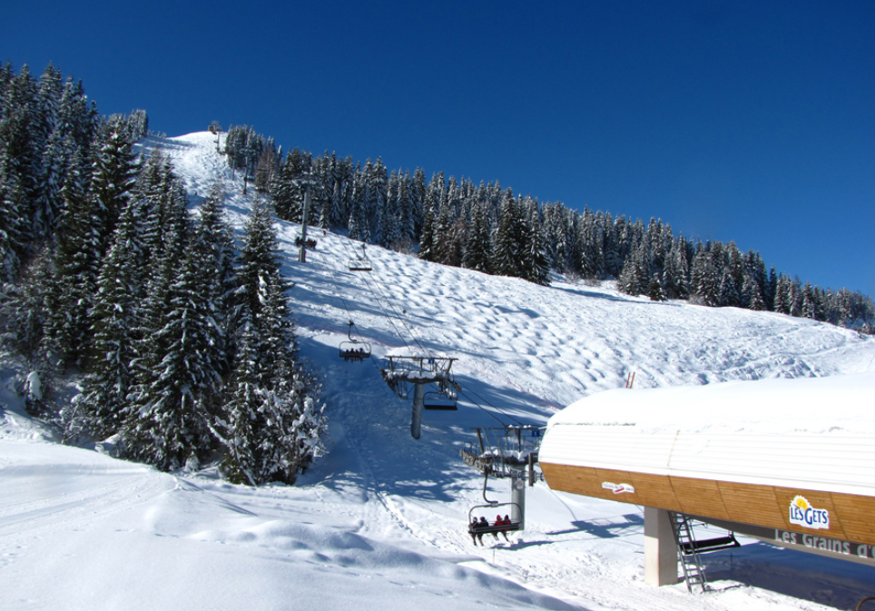
Conclusion
Avec la réalisation de cette première étape de modernisation des axes structurants du domaine skiable des Gets, la société d’exploitation Sagets a considérablement amélioré la gestion des flux des skieurs sur le secteur d’altitude « Ranfoilly-Rosta ». Confort, rapidité et sécurité sont les maîtres mots de cette première étape dans la réorganisation des axes majeurs du versant « Chavannes – Ranfoilly ».